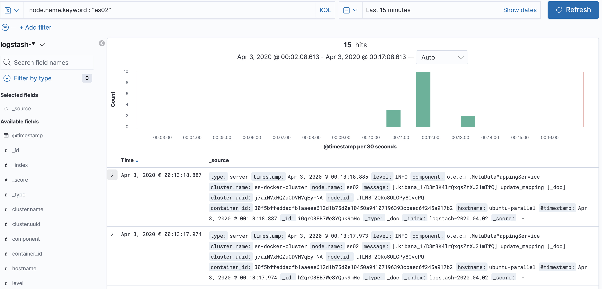

以收集Docker容器日志的例子，介绍下Fluentd的用法。
安装 Fluentd
Ubuntu 18.04上的安装命令（https://docs.fluentd.org/installation/install-by-deb）：
root@ubuntu-parallel:~# curl -L https://toolbelt.treasuredata.com/sh/install-ubuntu-bionic-td-agent3.sh | sh
以Daemon方式启动：
root@ubuntu-parallel:~# systemctl start td-agent.service
root@ubuntu-parallel:~# systemctl status td-agent.service
fluentd的安装目录是在/opt/td-agent/下的。为演示方便，我们可以直接使用 /opt/td-agent/embedded/bin/fluentd这个程序。
root@ubuntu-parallel:~# ps -ef | grep fluentd
td-agent 30596 1 0 17:10 ? 00:00:00 /opt/td-agent/embedded/bin/ruby /opt/td-agent/embedded/bin/fluentd --log /var/log/td-agent/td-agent.log --daemon /var/run/td-agent/td-agent.pid
td-agent 30602 30596 9 17:10 ? 00:00:00 /opt/td-agent/embedded/bin/ruby -Eascii-8bit:ascii-8bit /opt/td-agent/embedded/bin/fluentd --log /var/log/td-agent/td-agent.log --daemon /var/run/td-agent/td-agent.pid --under-supervisor
其他系统的安装参考：https://docs.fluentd.org/installation
小试牛刀
配置文件 test.conf，启动一个HTTP服务，并把接收到的日志，打印到标准输出。
<source>
@type http
port 9880
</source>
<match *.*>
@type stdout
</match>
启动fluentd进程。
root@ubuntu-parallel:~# /opt/td-agent/embedded/bin/fluentd -c test.conf
通过HTTP服务提交日志。可以看到fluentd终端打印出了输入的日志。
root@ubuntu-parallel:~# curl -X POST -d 'json={"event":"data"}' http://localhost:9880/my.tag
实战：收集Linux主机上的Docker容器日志
Docker官方有fluentd的Logging Driver。不足之处：
- 因为没有了本地日志文件，docker logs 不管用了。
- 需要额外配置，或是在daemon.json里设定，或是docker run时候设定。新增机器或是运行容器，很容易忘记。
- 如果远程数据存储down了，会不会丢日志。
考虑到这些问题，本实验以收集本地日志的方式使用fluentd。
实验前提条件
- Linux系统
- Docker容器使用默认的Logging Driver，也就是json-file
- 容器日志目录（也包含其他配置文件的）
/var/lib/docker/containers
配置文件（输出到stdout）
定义一个配置文件 docker.container.log.conf
<source>
@type tail
path /var/lib/docker/containers/*/*-json.log
pos_file /var/log/docker_container.log.pos
tag docker.*
refresh_interval 10
read_from_head true
<parse>
@type json
</parse>
</source>
<filter docker.var.lib.docker.containers.*.*.log>
@type parser
key_name log
remove_key_name_field true
<parse>
@type json
</parse>
</filter>
<filter docker.var.lib.docker.containers.*.*.log>
@type record_transformer
<record>
container_id ${tag_parts[5]}
hostname "#{Socket.gethostname}"
</record>
</filter>
<match docker.var.lib.docker.containers.*.*.log>
@type stdout
</match>
简要介绍
一个典型的日志收集过程分三部分：
- 定义数据源，也就是source部分
- 每条数据可以增删修改字段，也就是filter部分，filter可以是0个或是多个，按顺序处理。
- 数据输出，也就是match部分
source
- @type tail 使用tail插件 https://docs.fluentd.org/input/tail
- path 定义路径，正则匹配
- pos_file 存放读文件的offset
- 需要定义tag，filter、match使用tag进行匹配。
- tag docker.*，*会被实际的文件名给替代
- refresh_interval 设置多久刷新监听的文件列表，默认60秒
- read_from_head 默认false，也就是，没有pos存在的话，从文件尾读取。设置为true，解决新增文件而文件又没被fluentd及时监听起来的问题。
- parse 使用json解析，因为docker的logging driver用的json-file
更多source插件见：https://docs.fluentd.org/input
filter
- 指定tag pattern
- @type parser 使用parser插件 https://docs.fluentd.org/filter/parser
- key_name 需要parse的字段名
- remove_key_name_field 因为我们只需要log字段的json内容，log字段本身不需要保留
- parse 解析为json，因为我们的应用日志是json格式输出的
- @type record_transformer 使用record_transformer插件 https://docs.fluentd.org/filter/record_transformer
- record 新增字段
- ${tag_parts[5]} 预定义的变量，tag_parts是tag字符串被”.“切分后的数组，第6个代表的是container_id
"#{Socket.gethostname}"ruby内的变量
更多filter插件见：https://docs.fluentd.org/filter
match
- 指定tag pattern
- @type stdout 使用stdout插件，用于演示 https://docs.fluentd.org/output/stdout
启动fluentd
注意查看日志。
root@ubuntu-parallel:~# /opt/td-agent/embedded/bin/fluentd -c docker.container.log.conf
生成日志
JSON格式输出每一行日志。
root@ubuntu-parallel:~# docker run -it busybox echo '{"user":1,"num":2}'
{"user":1,"num":2}
观察 /var/lib/docker/containers/*/*-json.log日志内容：
{"log":"{\"user\":1,\"num\":2}\r\n","stream":"stdout","time":"2020-04-02T12:25:50.877037148Z"}
fluentd stdout输出：
{"user":1,"num":2,"container_id":"e4fb94ee2d067450eeaf15837ed1497e2b7eb2f6754ba4eec1792ee37e31f12f","hostname":"ubuntu-parallel"}
输出从stdout改为elasticsearch
启动ES
参考 https://www.elastic.co/guide/en/elastic-stack-get-started/current/get-started-docker.html，使用docker-compose启动es和kibana服务。
root@ubuntu-parallel:~# docker-compose up
修改match
<match docker.var.lib.docker.containers.*.*.log>
@type elasticsearch
host localhost
port 9200
logstash_format true
</match>
参考：https://docs.fluentd.org/output/elasticsearch
启动fluentd
root@ubuntu-parallel:~# /opt/td-agent/embedded/bin/fluentd -c docker.container.log.es.conf
kibana日志分析
因为ES的日志已经是JSON格式输出的，所以也不需要额外造数据了。

Last modified on 2020-04-02